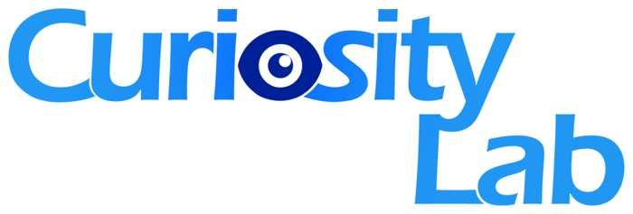

Jaison Manjaly
Jaison Manjaly is a Professor at IIT Gandhinagar and the Program Director of Faculty Leadership for Life: Understanding Ourselves, Supporting Others. He joined IIT Gandhinagar at its inception in 2008. He is affiliated with both the Department of Humanities and Social Sciences and the Department of Cognitive and Brain Sciences. His academic and research interests lie at the intersection of curiosity, education, and exclusion, focusing on how curiosity shapes learning, social relationships, and inclusion across diverse educational and cultural contexts. As the Principal Investigator of the Curiosity Lab at IITGN, he leads research into the behavioral, social, and pedagogical aspects of curiosity and develops innovative interventions to help students and educators build curiosity-driven classrooms. His collaborative work with UNICEF and the SHSRC Gujarat focuses on designing and implementing behavioral interventions to promote social change, particularly in education and child development. As the founder of the Social Action and Policy Lab, he continues to translate research insights into actionable frameworks for policy and community engagement.
In the formative years of IITGN, he played a proactive role in key institutional initiatives and experiments. He significantly contributed to shaping the Humanities, Social Sciences, and Cognitive Science, which have since become defining pillars of the institute’s interdisciplinary vision. During his tenure as Dean of Student Affairs, he worked to build a sustainable institutional culture rooted in empathy, inclusion, and intellectual freedom. He designed several initiatives that enhanced student wellbeing, leadership, and emotional development, laying the foundation for IITGN’s distinct approach to student-first educational experience. His contribution during these years helped the institute evolve into one of India’s most progressive academic environments.
Beyond his academic and administrative roles, Jaison champions the arts as integral to learning and well-being. He founded Art@IITGN, a community-led initiative at the intersection of science, philosophy, and aesthetics, integrating creativity into academic life through workshops, exhibitions, performances, and residencies. Bringing together artists, scientists, and scholars, it treats art as a form of inquiry that deepens empathy and dialogue. He also extends this vision to schoolchildren and teachers through outreach. He also conducts outreach programs for schoolchildren and teachers through ART@IITGN and the Curiosity Lab, fostering curiosity and creativity beyond the campus.
As the Faculty-in-Charge of Alumni Relations during 2018-2025, he strengthened IITGN’s alumni network through mentorship initiatives, collaborative events, and meaningful engagement, creating lasting connections between the Alumni and the institute. An avid sports enthusiast and a squash player, Jaison founded the IITGN Squash Open and continues to organize tournaments that foster campus camaraderie and promote physical wellbeing.

Research into the behavioral, social and pedagogical aspects of curiosity, and interventions for curiosity-driven classrooms.
Translating research insights into actionable frameworks for policy and community engagement.
A community-led initiative at the intersection of science, philosophy and aesthetics: workshops, exhibitions, performances and residencies.
Tournaments that foster campus camaraderie and promote physical wellbeing.